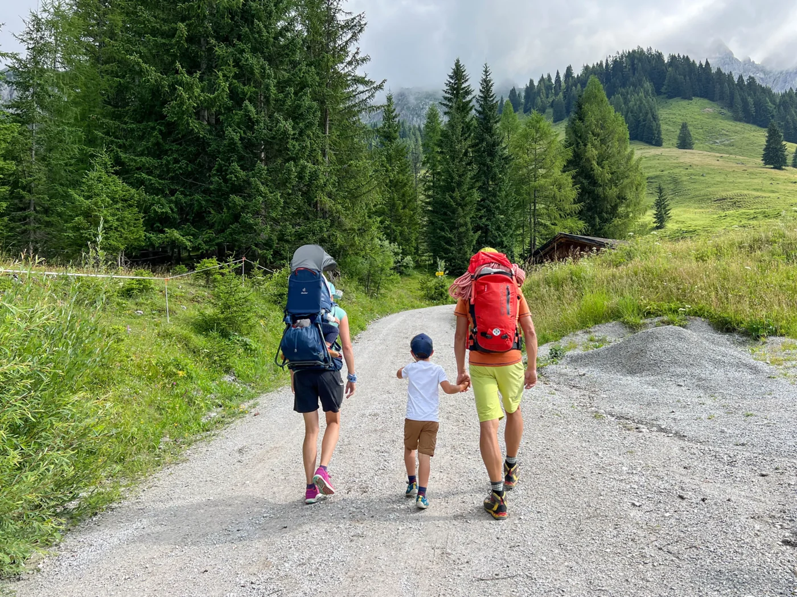

DE BLOG VAN MAAS & HOF
Inzicht voor jouw toekomst.
Onze kijk op wonen, vermogen en financiële keuzes. We schrijven over vragen die spelen als je een eerste huis zoekt, samen verder gaat of plannen maakt voor later.
In onze artikelen verbinden we geld aan het leven dat je wilt opbouwen. Hoe houd je ruimte voor een opleiding, een gezin of minder werken? Wat betekent duurzaam wonen voor je budget? We geven je vragen en voorbeelden waarmee je zelf overzicht kunt maken en een gesprek kunt voorbereiden.
Die blik op vandaag én later komt terug in onze missie en visie. Wil je na het lezen iets concreet maken? Verken je plannen met de rekentools of lees hoe onze beoogde begeleiding is opgebouwd.


UITGELICHT · Hypotheken
Je eerste huis: begin bij je leven, niet bij je maximale hypotheek
Je ziet een woning die goed voelt. Maar welk bedrag past ook bij de rest van je leven? Wij zetten de vragen op een rij waarmee je jouw zoektocht een rustig begin geeft.
Lees het artikel ↗Meer om over na te denken.
Kies het onderwerp dat bij jouw volgende stap past. De artikelen helpen je om mogelijkheden, twijfels en vragen op een rij te zetten voordat je een financiële beslissing neemt.
Een vraag die jou bezighoudt?
Vertel ons wat je wilt begrijpen of welke stap je overweegt. Misschien zoek je een woning, wil je samen afspraken maken of wil je je vermogen een duidelijk doel geven. Neem je eigen vragen mee; je hoeft nog geen uitgewerkt plan te hebben.
Neem contact op ↗